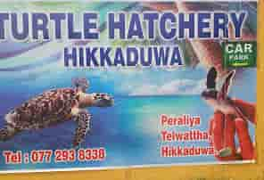
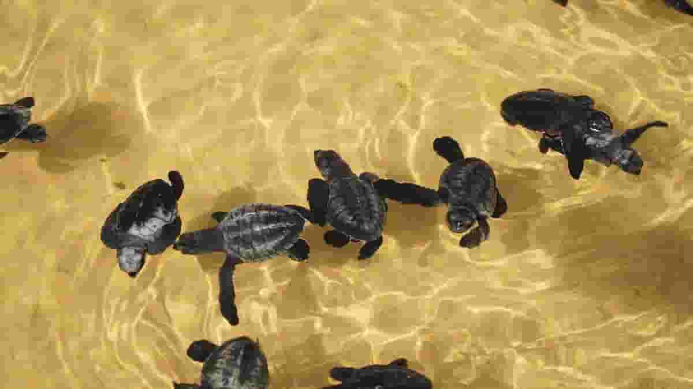
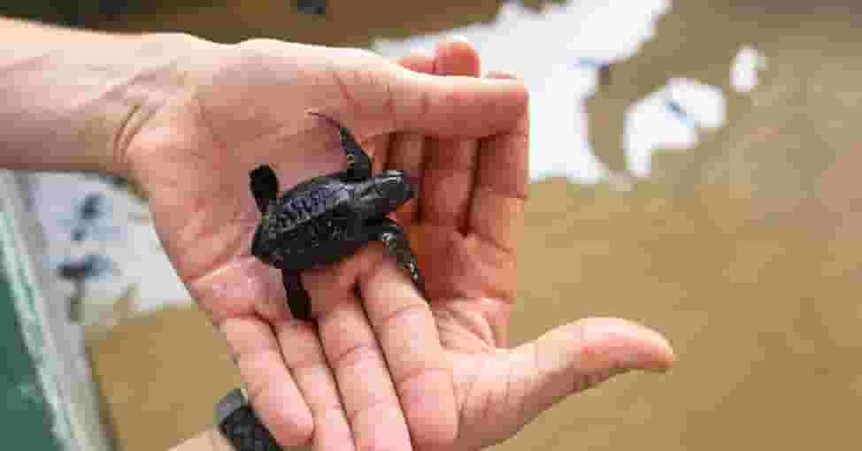

About 2 kilometers north of Hikkaduwa, on the beach, lies the Turtle Hatchery. The hatchery is a tiny, private research facility that demonstrates the turtles' gradual growth and works to preserve marine turtles, who are in risk of extinction. For an extra price, there are some locations where you may also get the chance to release newborn turtles into the huge ocean. March through April are the greatest months to go and watch the turtles.
The place

It is not difficult to overlook as you drive northward along the Hikka beachfront. Outside, paintings with colorful turtle themes are all over the walls.On the interior, there are only a number of tanks—different ones for various species of turtles—along with plenty of signboards with information about them.As soon as you enter, there is a sandy area where the turtle eggs are laid, of course. Sea turtle eggs typically hatch in the summer, and the young hatchlings go to the surface in 3 to 7 days.
Mission & humble beginnings

a facility dedicated to protecting some of the world's most vulnerable turtle species. The southern shore of the island is home to a number of turtle hatcheries, including this one. It began as a community initiative to help save the southern coast's biodiversity, but it has now developed into a full-fledged hatchery and rescue facility with devoted personnel who toil around the clock to research, look after, and safeguard various turtle species.
Vision

The hatchery and rescue facility now cares for five different kinds of turtles. These species include the Green Turtle, Hawksbill Turtle, Leatherback Turtle, and Olive Ridley Turtle. Modern water tanks are included in the facilities at the sea turtle hatchery and rescue center, which also cares for adult turtle species that have been pulled from the water after suffering injuries. The place where the turtles lay their eggs, which has distinct small mounds of sand heaped neatly between one another, is one of the more odd sights in the center. The turtle eggs' hatching process is carefully tracked at each of these mounds.